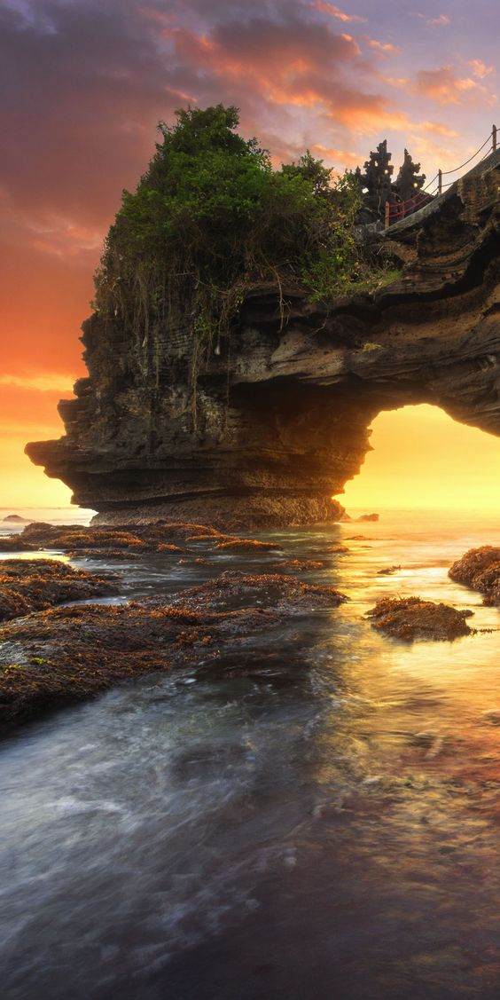
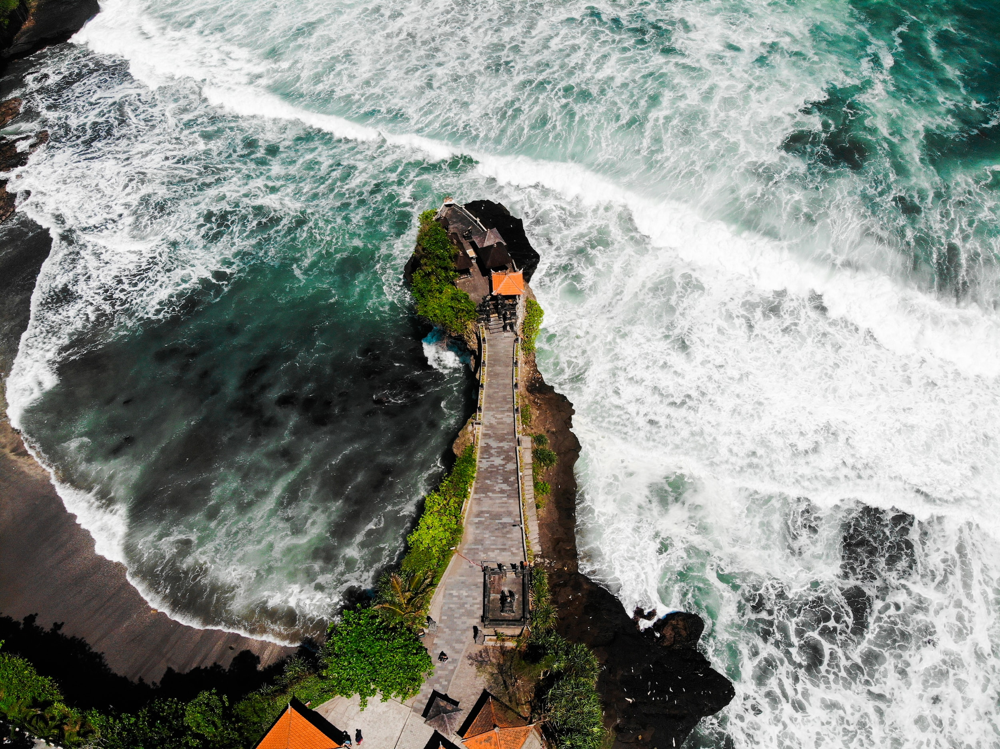
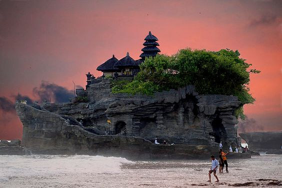
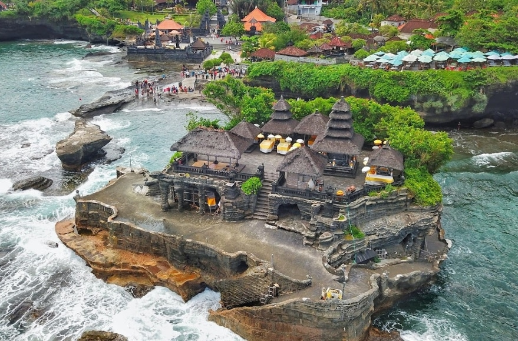
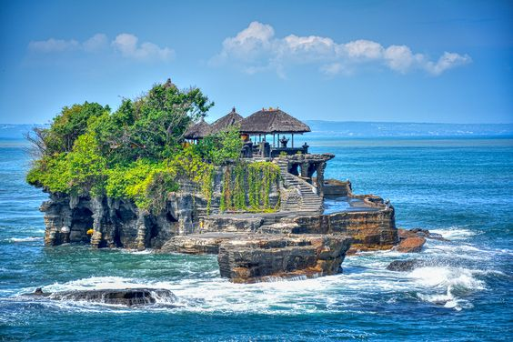
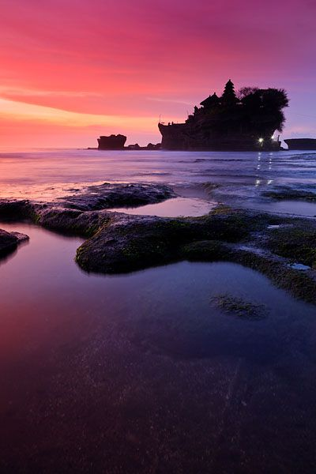
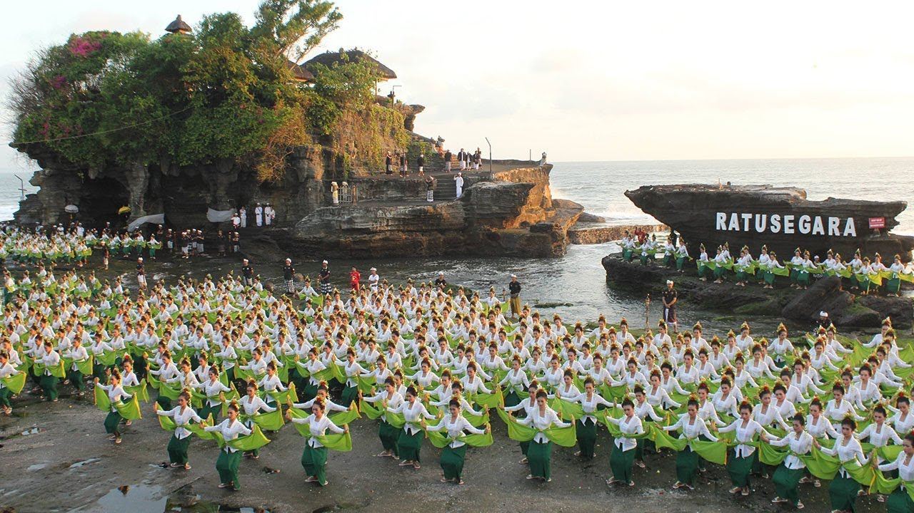
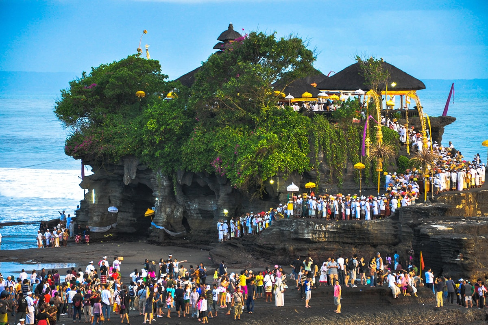
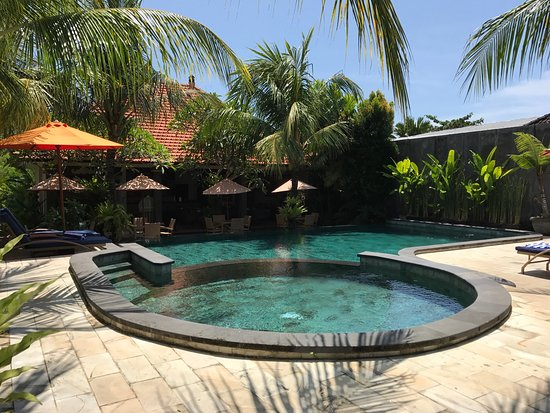
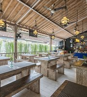

Tanah Lot Temple is located on a rock, about 300 meters from the shoreline. a place that becomes the only favorite tourist destination for one when they stop at the island of the gods. of its location off the coast, the waves from Tanah Lot Tabanan beach will hit the rocks.Tanah Lot Temple is one of the most sacred Temples (Hindu Places of Worship) in Bali, Indonesia. Here there are two temples located on a large rock. One is located on a boulder and the other is located on a cliff similar to Uluwatu Temple. Tanah Lot Temple is part of the Dang Kahyangan temple.Tanah Lot Temple is a sea temple where the worship of the guardian gods of the sea. Tanah Lot is famous as a beautiful place to watch the sunset.
The attraction of Tanah Lot is not only the exotic temple that stands firmly on a large rock. Tanah Lot is even more charming with a beautiful beach backdrop. Especially at dusk, so sacred, mystical, and thrilling. Hindu tourists can travel while praying at the Tanah Lot temple.Tanah Lot is in the middle of the sea. No need to use a boat, tourists can walk to Tanah Lot Temple when the sea water is receding. However, the roads will be covered with water at high tide. Tanah Lot looks like a small island floating in the ocean from a distance






The colossal dance performance, which involved 1800 dancers from 10 sub-districts, was held as the opening event for the 2018 Tanah Lot Art & Food Festival. In addition, this dance received a muri record as the implementation of a colossal dance involving 1800 people.
Rejang dance is a Balinese folk/tribal dance performed specifically by women and for women. The movements of this dance are very simple but progressive and agile. Usually the Rejang dance performance is held in the temple when a traditional ceremony or Hindu Dharma religious ceremony is taking place.
This dance is performed/danced by Balinese female dancers with great reverence, full of devotion to the Hindu Gods and full of soul. The dancers wear festive ceremonial clothing with lots of decorations, dancing in marching circles around the temple or pelinggih courtyard which is sometimes done holding hands.


Tanah Lot Temple is located at 30 Km on the west side of Denpasar city and about 11 Km on the south of Tabanan city. This temple is built on a rock with a size of 3 hectares and can be reached in a few minutes by foot, because it is only 20 meters from the beach. This temple is very famous among tourist destinations in Bali with spectacular views of the sunset. In several corners of the coral reefs around Tanah Lot Temple there are tame snakes which are believed to be sacred and purified creatures, black and white snakes which according to the local community believe that they are the property of gods and as guardians of the temple from bad influences.
The temple was built by Danghyang Nirartha who succeeded in strengthening the Balinese people's belief in Hindu teachings and built the Sad Kahyangan in the 16th century.Odalan or the feast day at this temple is celebrated once every 210 days, just like the other temples. The fall is close to the Galungan and Kuningan celebrations, namely on the Holy Day of the Cemeng Langkir Buddha. At that time, people who pray will be busy praying at this temple.
Pujawali at the Tanah Lot Luhur Temple, Kediri, Tabanan, will take place from today, to be exact, Buddha Wage Langkir. and this pujawali lasts for 3 days and 3 nights.at this time many people in Bali and outside Bali flock to come to perform prayers.
Rp. 30.000/Entry

Rp. 250.000/Night

Rp. 120.000/Start